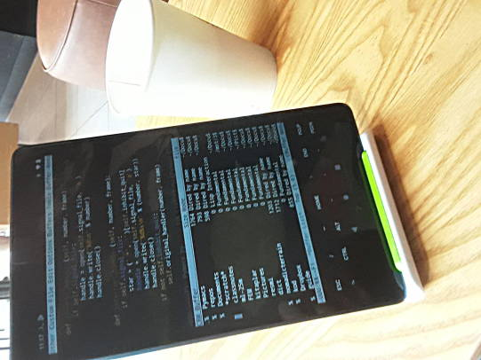

Lenovo Tablet Üzerinde Termux
Android üzerinde tam tekmilli Unix olabilir mi? Olabilir. Termux ile mümkün. Daha önce bir Samsung telefon üzerinde Termux nasıl kurulur yazmıştık [1]. Şimdi aynı işlemi bir Lenovo tablet için deneyelim. Amacımız numpy, scipy, emacs ve flask gibi programları, paketleri işletebilmek olacak.
Termux'un Android üzerinde işlemediği hakkında bazı şikayetler var,
bunlar Android versiyon 12 için. Fakat yaygın kullanımdaki
versiyonların çoğunluğu 10 ve altında, bu sürümler için Termux problem
çıkartmamalı, problem varsa erişilemeyen dosya servisi problemi
olabilir, tekrar denemek problemi çözebilir, ya da gerektiği yerde
LDFLAGS kullanımı (altta), ve python paketleri sıfırdan derlemek
yerine mevcut derlenmiş programları kullanmak seçenek olabilir.
Kuruluş
Google Play Store'daki Termux problem çıkartabilir. En iyisi [2] adresinden apk dosyasını indirip kurmak. İndirilip ya dosyaya tıklanır, ya da System | About Phone | Build number'a birkaç kere tıklandıktan sonra geliştirici mod'una geçip Developer Options altında USB Debugging hazır hale getirilir, ve Ubuntu dizüstünde
sudo apt install adb
ile Android'e USB kablosu üzerinden erişilebilen bir ortam kurmuş oluruz ve
adb install com.termux_117.apk
ile apk kurulumu yapabilir, yani üstteki dizüstünde işletilecek ve kurulum Android tablet üzerinde yapılacak.
Termux kurulduktan sonra Android üzerinde
termux-setup-storage
yapmak iyi olur. Bu $HOME altında bir storage dizini
oluşturuyor. Dizin içinde Android'in bildik downloads dcim gibi
dizinlerine sembolik bağlantılar var.
Dizüstünden direk USB kablosu ile dosya da gönderilebilir, mesela
adb push filanca.tar.gz /storage/emulated/0/Download/
Bazı durumlarda faydalı olabilir, bunu da paylaşalım.
Tablet üzerindeki Termux komut satırında ekran klavyesi ile komutlar girilebilir. Bluetooth klavyesi olanlar onu da kullanabilir. Ekran altındaki Ctrl, ESC gibi tuşların ekrandan basılmasını sağlayan kısmı iptal etmek için Ses Açmak + q tuşları yeterli. Şimdi Termux'a kurulabilen ek programlara gelelim.
pkg upgrade
yapmak iyidir, herşey güncellenir. Arada soru sorar, bunları ENTER ile geçeriz.
Alttaki paketler üzerinde pkg install.
python3 git openssh build-essential python-numpy emacs libxml2 libxslt
cmake freetype binutils file libxapian recoll boost gettext
Bazen kurulum patlayabilir, birkaç deneme problemi çözer. Üsttekiler
tamamsa matplotlib üzerinde pkg install denenmeli. Eğer yardımcı
paketlerde problem çıkarsa bunları ayrı ayrı başına
LDFLAGS="-L/system/lib64" CFLAGS="-I/data/data/com.termux/files/usr/include" pip install
ekleyerek pip ile kurmayı deneyebiliriz.
Dikkat: Kurulum tüm sistem bazında yapılıyor, hala bir izole [4] ortam
yaratmadık. Buradaki sebep `python-numpy kurulumunun sistem bazlı
olması, diğer baz paketler de onu temel alarak yapılırsa bazlı işler
daha rahatlaşıyor, bu durumda temel paketler sistem bazlı
oluyor. Fakat problem değil, bir kez temel paketler kurulunca, artık
izole ortamlar mevcut olan paketler için sistem bazlı olana referans
yapabilir, ek pip install paketleri hala ayrı izole ortamda
kalabilir.
pip3 install virtualenv
Ve env3 adlı ilk ortamımızı yaratalım,
virtualenv --system-site-packages -p /data/data/com.termux/files/usr/bin/python3 env3
Sistem referansı --system-site-packages ile yapıldı.
Artık source env3/bin/activate ile yeni ortama girilebilir.
Ek kurulumlar bu ortam icinde pip ile,
pip install Pillow bs4 flask folium geopy ipython
Tuş Değişimi
Control tuşu Trust Bluetooth klavyelerinde rahat erişilen yerde değil, Vim, Emacs kullanıcıları bu tuşu çok kullanır, CAPS tuşunu CTRL yapabiliriz, ek olarak benim tercihim SPACE yanındaki Command yazan tuşu Left Alt yapmak. Bunun için Android seviyesinde değişiklik lazım. Şu [3] uygulama ile web üzerinde isteğe göre üretilen bir .apk bu değişimi yapabiliyor. APK üretimi arka planda derleme ile üretiliyor muhakkak, bu .apk indirilip kurulunca (Android uyarılarını dikkate almayız) tuş değişimi olur. Web sitesinde tanımları liste bazlı seçebiliriz, bahsettiğim Command (ki sisteme Meta Left olarak gözüküyor) Alt Left bağlantısı yapmak alttaki şekilde.

Bu tanım daha sonra yaratılacak .apk içine koyulacak, Download tuşuna tıklayınca apk alınır. Uygulamaya güvenmeyenler aynı sayfadaki bağlantıdan kaynak koduna gidip Android kodunu derleyebilir.
Apk kurulduktan sonra tabii klavye seçiminin yeni programı görmesi lazım; Android'de System | Languages & Input | Physical keyboard (mesela bir bluetooth klavye) seçtikten sonra Physical Keyboard altında bir layout seçimi var, buraya girip listeden "ExKeyMo Layout" seçmek lazım.
Emacs
Emacs başlatmak için $HOME altında .emacs yazılır, tabii ev dizini
Termux'ta farklı bir yerde, /data/data/com.termux/files/home altında,
fakat cd hala direk buraya gider. Benim standart .emacs dosyam
(load-file "/falan/filan/emacs-ayarlar-1.el")
gibi tek bir satırdan ibarettir. Tüm ayarlar load-file ile yüklenen
ikinci .el dosyasındadır.
Nihayet Termux ekranından emacs -nw ile favori editörümüzü başlatıyoruz,

Bazı .bashrc ayarları
alias env3='source $HOME/Documents/env3/bin/activate'
alias emnw='source $HOME/Documents/env3/bin/activate; emacs -nw '
alias gp='git push origin master'
alias ga="git add . "
Görüldüğü gibi $HOME/Documents/env3 içinde bir izole Python 3 ortamı
var, editör başlatmadan önce onu başlatıyoruz, böylece orada kurulmuş
tüm paketler editör içindeki komutlar tarafından görülebiliyor.
Kaynaklar
[1] Android Uzerinde Linux - Termux, Samsung J6
[2] F-Droid Termux
[3] exkeymo
[4] virtualenv, Python İzole, Sanal Çalışma Alanı (Python Virtual Environment)
Yukarı